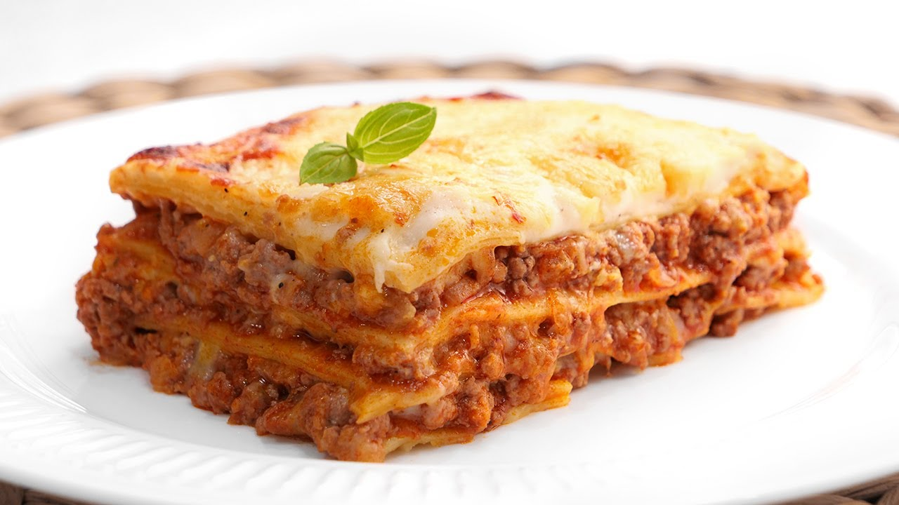

La lasaña (en italiano, lasagna) es un tipo de pasta. Se suele servir en láminas
superpuestas intercaladas con capas de ingredientes al gusto, más frecuentemente
carne en salsa boloñesa y bechamel. Su origen es italiano y el plato preparado
usualmente con carne suele llamarse lasaña al horno. La lasaña al horno también se
puede hacer con verduras (espinacas, zanahoria berenjenas, etc.) o pescados. Se
termina con bechamel y abundante queso rallado para gratinarla en el horno.
La palabra «lasaña» proviene del griego lasanon, a través del latín lasănum,
que se refiere al pote en el que se cocinaba. La palabra singular en italiano
es lasagna y en plural lasagne se aplica indistintamente al plato o a la pasta
en forma de láminas. Es una entrada o primer plato caliente que se suele comer
en invierno o en los periodos fríos de la primavera.
Ingredientes
- 200g Lasaña
- 2 sobres de salsa de tomates
- 200g de carne picada
- 1 zanahoria rallada
- 1 cebolla en cubos
- 1 diente de ajo picado
- 1/2 pimiento rojo en cubos
- 1/2 pimiento verde en cubos
- 1 cucharada de paprika
- 3 hojas de laurel
- Queso parmesano
- Aceite de oliva
- Sal y pimienta
Pasos
- En una sarten mediana calentar un poco de aceite de oliva y rehogar por unos minutos la cebolla y el ajo, hasta que esten dorados.
- Incorporar la zanahoria rallada y cocinar por unos minutos mas, luego los pimientos en cubos y la cucharada de paprika.
- Agregar la carne picada y mezclar a fuego medio. Incorporar la sal y la pimienta.
- Agregar las salsas de tomate junto a las hojas de laurel.
- Cocinar a fuego suave hasta que esté cocido. Reservar.
- Cocinar las láminas de lasaña, según indica en el envase.
- Una vez cocidas, colar y sumergir en agua fría hasta el momento de armar la lasaña.
- Precalentar el horno 15 minutos a temperatura alta.
- En una fuente para horno, enmantequillar el fondo. Agregar una capa de salsa boloñesa. Agregar una capa de lasaña y una capa de salsa, cubrir con una capa de queso parmesano rallado.
- Repetir el paso anterior dos veces mas. Cubrir bien con queso.
- Cocinar por 15 minutos. Dejar gratinar el queso. Servir de inmediato.